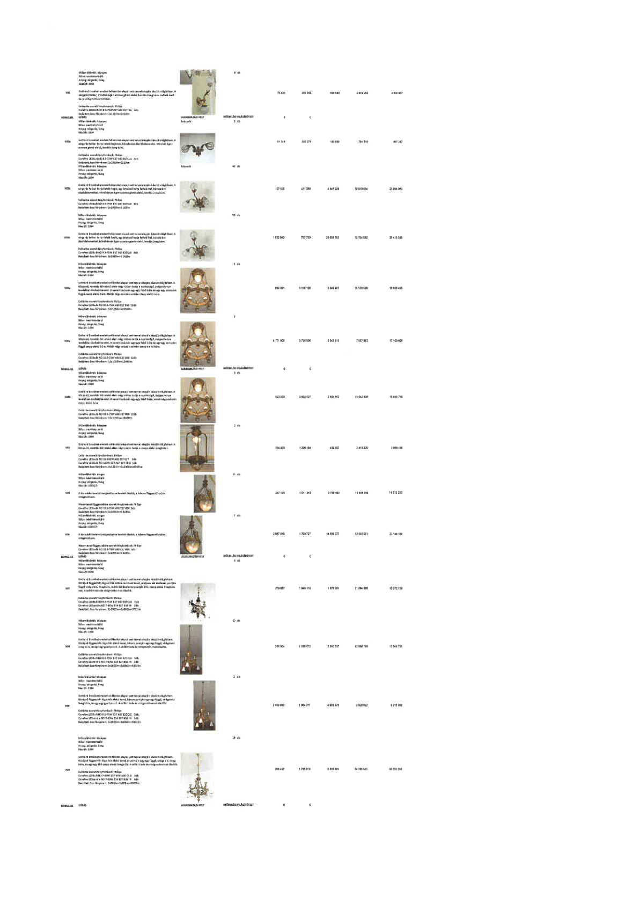

| Tétel | Menny. | Egys. | Anyag e.ár (net HUF) | Díj e.ár (net HUF) | Anyag összesen (net HUF) | Díj összesen (net HUF) | Anyag+Díj összesen (net HUF) |
|---|---|---|---|---|---|---|---|
| V02 Gothárd Erzsébet eredeti falikarok... | 8,0 | db | 75 823 | 354 008 | 606 583 | 2 832 059 | 3 438 642 |
| V03a Gothárd Erzsébet eredeti falikarok... | 2,0 | db | 91 349 | 382 274 | 182 699 | 764 548 | 947 247 |
| V03b Gothárd Erzsébet eredeti falikarok... | 43,0 | db | 108 045 | 411 068 | 4 645 929 | 17 675 924 | 22 321 853 |
| V03c Gothárd Erzsébet eredeti falikarok... | 20,0 | db | 1 032 940 | 787 730 | 20 658 793 | 15 754 592 | 36 413 385 |
| V04a Gothárd Erzsébet eredeti csillárok... | 5,0 | db | 669 981 | 3 110 106 | 3 349 907 | 15 550 529 | 18 900 436 |
| V04b Gothárd Erzsébet eredeti csillárok... | 2,0 | db | 4 771 908 | 3 778 908 | 9 543 815 | 7 557 815 | 17 101 630 |
| V05 Gothárd Erzsébet eredeti csillárok... | 2,0 | db | 520 820 | 2 608 527 | 2 604 102 | 13 042 636 | 15 646 738 |
| V06 A kör alakú keretet vadgesztenye levelek díszítik... | 11,0 | db | 234 929 | 1 208 164 | 2 584 219 | 13 289 804 | 15 874 023 |
| V06 ... | 7,0 | db | 287 135 | 1 041 343 | 2 009 945 | 7 289 401 | 9 299 346 |
| V07 Gothárd Erzsébet eredeti csillárok... | 6,0 | db | 2 087 010 | 1 790 727 | 12 522 060 | 10 744 362 | 23 266 422 |
| V08 Gothárd Erzsébet eredeti csillárok... | 10,0 | db | 279 677 | 1 949 116 | 2 796 770 | 19 491 160 | 22 287 930 |
| V08 ... | 2,0 | db | 286 004 | 1 288 672 | 572 008 | 2 577 344 | 3 149 352 |
| V09 Gothárd Erzsébet eredeti csillárok... | 19,0 | db | 2 493 898 | 1 964 311 | 47 384 062 | 37 321 909 | 84 705 971 |
